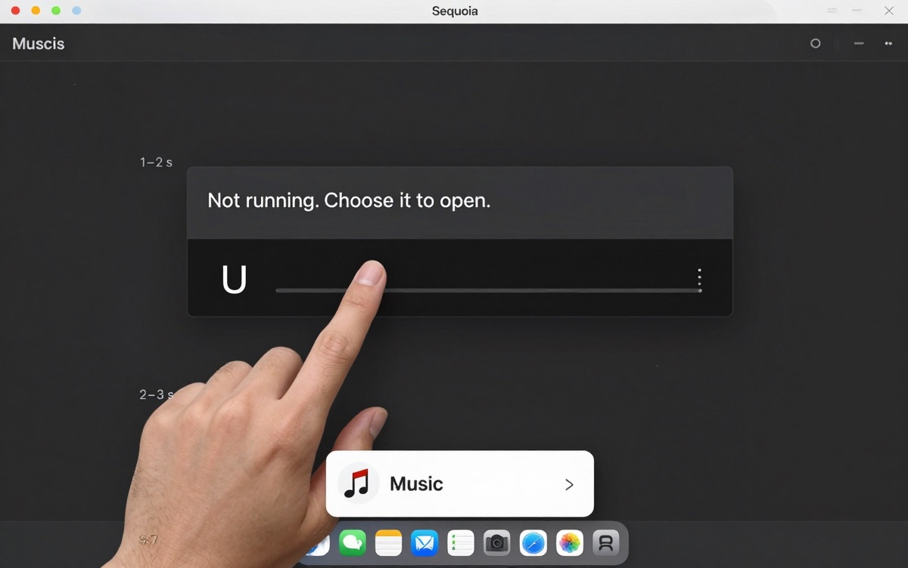
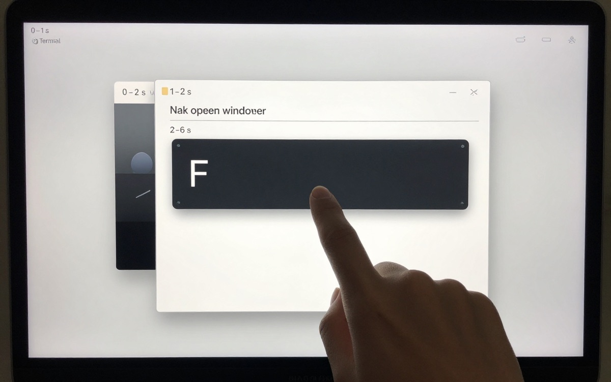

Features / Launch or reopen
Launch or reopenThe key works even when the app isn't open.
Music is U whether it's running or not. Press ⌥⇥ U and it opens. You don't have to remember what's open and what isn't. The key just takes you there.
● Same key, open or closed
Your apps stay in the list when you quit them.
Every app you've given a key in Settings shows up in the switcher, open or not. A closed one says "Not running. Choose it to open." Press its key and it opens, in front and ready to use.
- It keeps its spot. Your apps don't jump around as you open and quit them, so neither do your eyes.
- One key does both. No separate launcher shortcut to learn.
- Click works too. So does arrowing to it and pressing ↩.

AI draft · replaceClosed the last window? You get a new one.
Some apps keep running after you close their last window. Finder and Terminal do. Choosing one in the switcher does what clicking it in the Dock does, so you land in a fresh window.
- You'll see it coming. The app shows "No open windows" under its name.
- Works for every app, including ones with an automatic key.
- Nothing to set up. It's how choosing an app always works.

AI draft · replaceSettings that change it.
In Settings → General and Settings → Shortcuts.
Good to know.
Which apps can I launch from the switcher?
Any app you've added in Settings → Shortcuts and given a key. Apps with an automatic key are listed while they're running.
Will the list fill up with apps I never use?
No. Only the apps you've added yourself stay in the list when they're closed.
What if I moved the app to another folder?
Window Switcher looks it up again, so the key still opens it.
Can I turn it off?
Yes. Turn off "Launch assigned apps that aren't running" in Settings → General. Closed apps then drop out of the list until you open them.
Press ⌥⇥. Then the next key you want.
Free for the Mac. No account, nothing running in the background, and every app has a key the moment it's installed.
Download Window Switcher for Mac